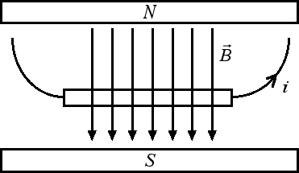

Il campo magnetico
Calcolo del campo magnetico
Vogliamo ora vedere altri esempi di campi magnetici creati da correnti. Se abbiamo una spira circolare di raggio r percorsa da una corrente i si crea un campo magnetico la cui intensità, al centro della spira, vale B = km π i / r. Il campo magnetico nel centro della spira aumenta all'aumentare della corrente che lo crea e al diminuire del raggio della spira. Il campo magnetico è perpendicolare al piano della spira e il verso è quello in cui avanza una vite quando viene avvitata nel verso in cui circola la corrente.
Se invece prendiamo un solenoide (ossia un filo avvolto su se stesso a formare una molla) il campo magnetico che si crea all'interno del solenoide è un campo magnetico uniforme che dipende dall'intensità di corrente i e dal numero di spire per unità di lunghezza N / l in base alla seguente relazione: B = 2 π km i N / l.
Un altro nome fondamentale per quel che concerne gli studi sui fenomeni magnetici è quello di Michael Faraday. Egli scoprì un'altra proprietà fondamentale del campo magnetico e della connessione esistente tra elettricità e magnetismo. Supponiamo di avere un campo magnetico uniforme e un filo percorso da una corrente i, disposto perpendicolarmente al campo, come nella figura sottostante:

Sul filo agisce una forza che è proporzionale all'intensità della corrente i e alla lunghezza l del filo. La costante di proporzionalità è esattamente uguale all'intensità B del campo magnetico. In formule possiamo scrivere: F / (i · l) = costante = B. Dal momento che il campo magnetico crea la forza che agisce sul filo avremo che aumentando il campo magnetico B aumenta anche l'intensità della forza F.
La direzione e il verso della forza F possono essere determinati con la regola della mano sinistra FBI, dove F corrisponde al pollice, B all'indice e i al medio. In altre parole se allineiamo l'indice della mano sinistra lungo il campo magnetico e il medio lungo la corrente, il pollice ci fornisce direzione e verso della forza risultante. Nel caso della figura riportata sopra, la forza è perpendicolare al piano su cui giacciono il campo magnetico e il filo, con verso dal lettore al piano.
In questa sezione abbiamo visto che una corrente e un campo magnetico possono interagire tra loro in maniera tale da generare delle forze. Se la corrente i è perpendicolare al campo magnetico, l'intensità della forza è uguale a F = i l B. Se invece il filo percorso da corrente i forma un angolo α con il campo magnetico l'intensità della forza è data da F = i l B⊥, dove B⊥ = B sen α è la componente del campo magnetico perpendicolare al filo percorso da corrente. Notiamo come se α = 90° allora sen α = 1, da cui B⊥ = B e la forza magnetica è massima quando il campo magnetico è perpendicolare al filo. Se invece il campo magnetico è parallelo al filo allora α = 0 da cui sen α = 0 e la forza magnetica F si annulla.
Se infine viene inserita nel campo magnetico di intensità B una spira rettangolare percorsa da una corrente i, si ottiene una coppia di forze, ognuna di intensità pari a F = i l B, che agisce sui due fili perpendicolari e che tende a mettere in rotazione la spira rettangolare. Questi principi fisici possono essere utilizzati per costruire un motore elettrico.
Il campo magnetico B è μT.